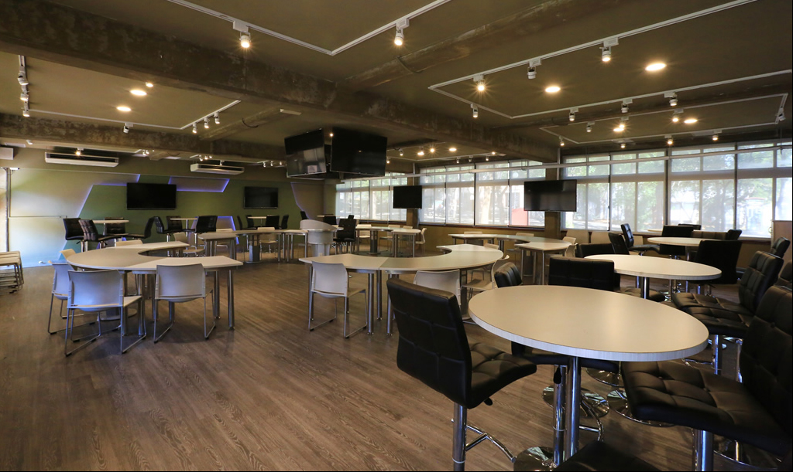

東海大學運算思維與程式設計
軟體介紹
教案介紹
APP介紹
場域介紹
相關報導
版權宣告
問題導向數位學習教室
打破傳統僵化的學習模式，打造全國創新的PBL「問題導向學習」教室，作為促進者和引導者的老師，可以隨時切入小組，播放輔助內容至數位面板上；也可以分享該組內容給其他小組，促進大家討論、激發想法。
ePBL教師版APP下載
ePBL學生版APP下載

Previous
Next
問題導向學習的創新數位學習教室。
教室場域的正中央上方，輔以類似NBA球場的環形電視牆，老師可透過無線控制，隨時播放教材內容或現場直學生的解題過程。
當學生分組後，同組學生可利用教室四周的討論圓桌，並利用牆上的數位面板，無線分享彼此觀點與做法。
作為促進者和引導者的老師，可以隨時切入小組，播放輔助內容至數位面板上；也可以分享該組內容給其他小組，促進大家討論、激發想法。
場域租借>
THU EPBL
為了讓PBL教學模式達到更好的效果，我們以從用戶體驗導入BYOD精神，每位老師使用自己的手機或平板進行教學與控制智慧教室以及運用遊戲化的功能，促進大家討論、激發想法。